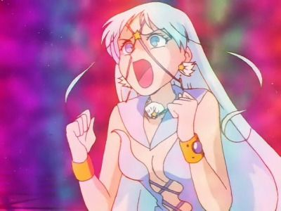
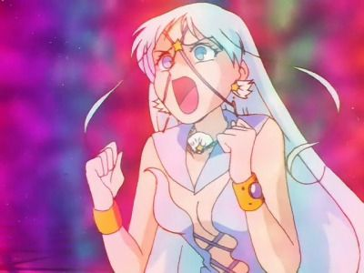

<- Повернутися на головну сторінку
<- Красуня воїн Сейлор Мун
<- Сейлор воїтельки
<- Вороги
Алюмінієва Сирена
Головна інформація
Історія:
Алюмінієва Сирена - одна з прислужниць Галаксії. Коли загинула Залізна Миша, пані послала її на ту ж саму місію. Вона дружить зі Свинцевою Вороною, хоча раніше вони були суперницями, живучи на різних планетах. Сирена атакувала людей, і при цьому не боялася за своє життя та не зв'язувалася напряму з Галаксією. Свинцева Ворона часто гнівалася через її легковажність. Врешті-решт, Сирена дізналася про особистість Сейлор Мун і переслідувала Усагі: одразу ж спробувала її вбити, але завадила Чібі-Чібі, а вдруге вона напала на головну героїню у літаку. Після останньої поразки Галаксія нещадно вбила її, не звернувши увагу на благання подруги
Галерея
 
